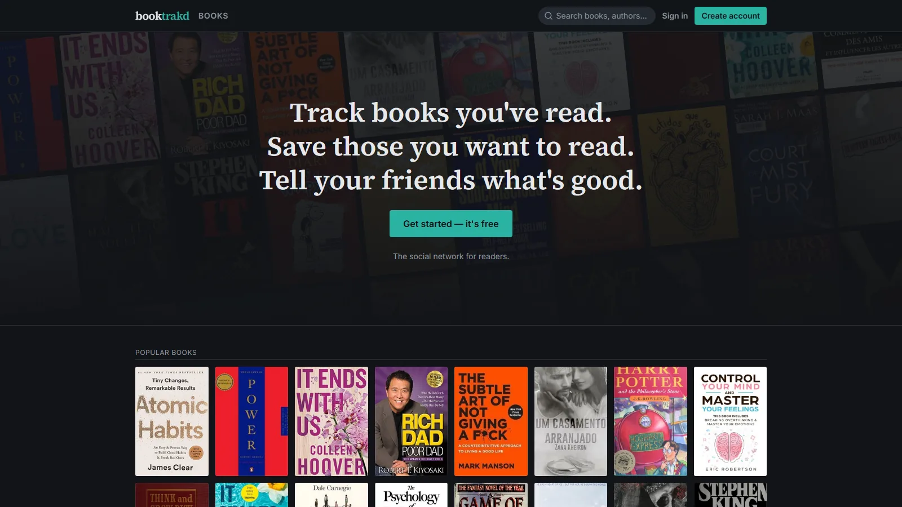

Full stack · TypeScript · Live prototype
booktrakd
Jan 2026 – PresentA Letterboxd-style social site for books. Readers log, rate and review what they read, keep a diary and reading list, import their Goodreads or StoryGraph history, and follow friends to see what they're reading. It's a solo project, currently a working prototype.
Its catalog of about 49,000 books and 800,000 editions is built from Open Library's data dumps by a Node.js import pipeline and job worker that normalize titles and authors, merge duplicate works and rank books by popularity. The site and its fully typed API live in one TypeScript monorepo. The API is tested with Vitest against a real Postgres schema running in memory, GitHub Actions runs CI, and the prototype is deployed on Vercel with Neon Postgres.
- Next.js
- React
- tRPC
- PostgreSQL
- Drizzle ORM
- Node.js
- Tailwind CSS
- Vitest
- GitHub Actions
- Vercel
- Neon